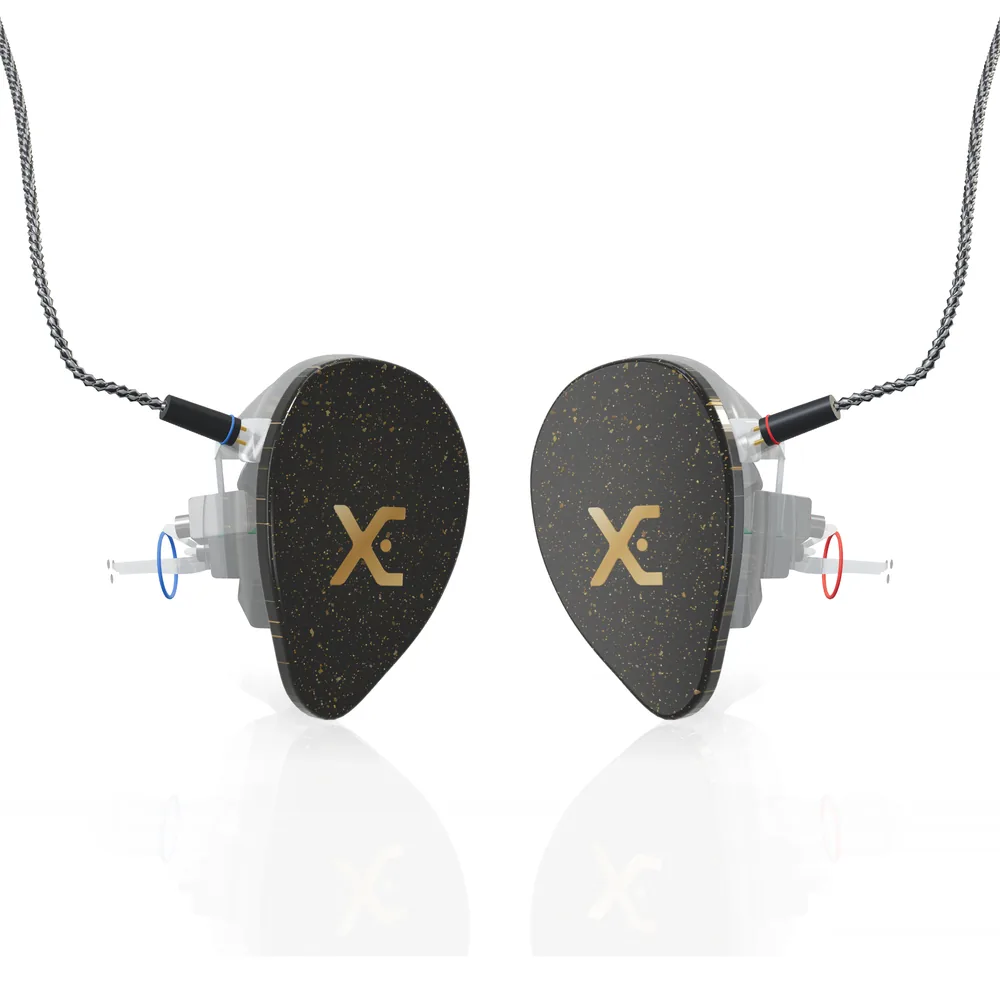

Fone In Ear Eletrostático
ou 12x de R$ 000,00 sem juros no cartão
- 8 drivers
- 4 eletrostáticos
- Crossover 3 vias
- 19 Ω
- 115 dB
- 10 Hz a 24 kHz
- Feito sob medida no seu ouvido
- Produzido no Brasil com assistência técnica nacional
Personalize e finalize
Cores da cápsula, faceplate, logo e cabo.Faça o pré-molde
Com um(a) fonoaudiólogo(a) perto de você. A gente indica.Produção
Cerca de 4 semanas depois que o molde aprovado chega.No seu ouvido
Frete grátis e assistência técnica nacional.
Descrição
O Eletrostático leva esse som para a linha de moldados da Xtreme Ears. São oito drivers em um crossover de três vias: quatro eletrostáticos cuidam das altas e super altas, dois drivers ficam com os médios e dois com os graves. Os três componentes são Sonion, fabricante dinamarquesa de drivers para fones profissionais: EST65QB02, 28UAP01 e 33AJ007i/9. Acompanha cabo balanceado de 8 núcleos prateados com conector 2 pinos.
O eletrostático move uma película ultrafina com campo elétrico, sem bobina no caminho. O resultado são agudos rápidos, abertos e cheios de ar, que somam detalhe sem cansar o ouvido em shows longos.
Informações de envio
Depois do pedido, a nossa equipe entra em contato para orientar o envio do pré-molde. Com o molde aprovado na Xtreme Ears, o fone entra em produção e é enviado em cerca de 4 semanas, com frete grátis.
Garantia
Assistência técnica nacional da própria Xtreme Ears. Veja as condições em Manutenção e Garantia.
